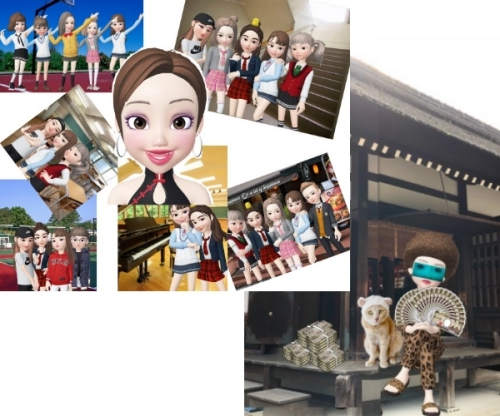
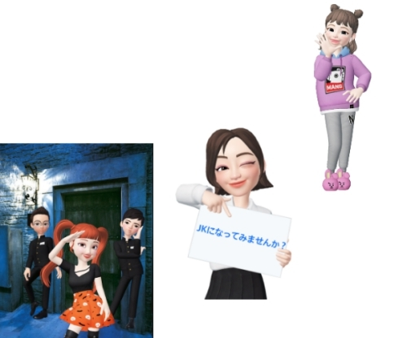
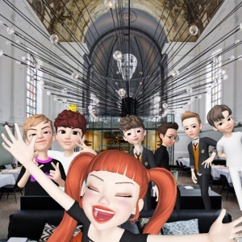
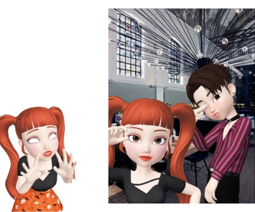
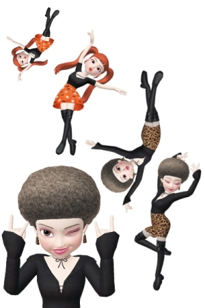
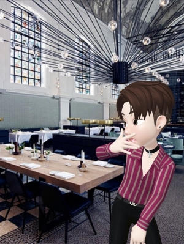

いつも狙ってる？ [梅吉]

ゴミ捨ての時、フタを閉め忘れているとカフェオレ色のひとが毎回入ってますw
このタイミング、逃しませんよ(*>艸<)

日差し＋エアコンの温風でフローリングがあったまってるタイミングも逃しません。
比較的暖かい日にはフローリングでコロンコロンする姿も見られるようになりました＾＾
今日は後半が長めなので梅吉ネタはこれにて！
後半はおばちゃんの願望の表れ？
妄想ZEPETO劇場でーす(^_－)☆
（スルー大歓迎！！）
くーさんから聞いた話に驚いたわ！

画像提供marimoさん
そこはもう一度JK気分を味あわせてくれる変身カフェだったんですって！
好きな制服に着替えて写真を撮ったりカフェでガールズトークを楽しんだり・・・
ウェイターはイケメン男子高校生！！
私の職業的興味がむくむくと湧き上がってきたわ。
お店を再オープンさせるときに参考になるかも。
偵察に行きたいってzombiekong姉さんに話してみたの。
気に入ったら土地と建物まるごと買ってきてもいいわよって言ってくれて。

偵察にはミクコピーに変装していったわ。
変装はねコソコソしちゃダメ。目立つほうが人は怪しまないという自論よ。
あの呼び込みの子達
なんだかうちのお店の子に似ているような・・・・
でもみんなあの薬を作る手伝いをしてくれたお礼に姉さんの招待でハワイに行っているはずなんだけど。
あの薬・・・
（あの薬の詳細はリュカさんブログを参照してね）
結果は失敗に終わってしまったし姉さんにもあなたの考えは間違っているって叱られたわ。
みんなにもずいぶん迷惑をかけた。
薬は幼い頃生き別れたママンの為にと思ったけれど、そのママンも半年前亡くなってしまったわ・・・
ああ、私の愚痴でごめんなさいね。
今の話は忘れてちょうだい。
さっ、偵察よ！
んん？今度は入り口の二人に見覚えが。
てんてん社長に息子さんがいたかしら。もう一人も気になるし。
ま、今日は偵察なので気にしないでおこうっと。
私だって変装しているしね。

ここがそうなのねー！素敵なお店じゃないのー！

え？？あの子、あの子は
あ！！あなた！！！ちぃ吉！！！！！！
確かに僕はちぃ吉です。でもミクコピーのあなたは？

私よ！

ちぃ姉さん！！
つづく・・・
リュカさんの妄想劇場とリンクしている箇所もありますが
私の妄想劇場はまた別のお話です。
「この世界はパラレルワールドの1つにすぎないのだよ。」

カフェオレ色の梅吉

梅吉 2023年8月10日 永眠


梅吉と出会った譲渡会

犬猫の理由なき殺処分ゼロ
妄想広告
UMEKICHI 光

爆発的に早い！
時々攻撃的！
Thanks to Mr.Boss365
爆発的に早い！
時々攻撃的！
Thanks to Mr.Boss365

梅吉さんマッタリの後はZEPETO劇場がすごいことになってますね。
あの~。梅吉さんと札束に囲まれたウハウハなzombiekong画像いただけませんかぁ? ヒョウ柄もんぺ(?)にサンダル含めまさに私の夢を実現してるではありませんかっ!
by zombiekong (2019-03-07 00:59)
洗濯物を干してるときに
かごの中に飛び込む不届き者がいて
つまみ出しながら作業してます（爆）
by ぽちの輔 (2019-03-07 06:13)
カフェオレ色の人で、爆笑～～^^
ありがとうございます。
by ニコニコファイト (2019-03-07 07:01)
ゴミ箱に入っている梅吉さんの表情、見逃しませんよ～って感じで可愛いですね。
なんかほっこりします(^_^)
by kou (2019-03-07 07:10)
梅吉くん、なんだか得意げな顔で収まってますね。
フローリングでは色まで同化しちゃってーー。
妄想劇場、こちらではまた別のストーリーが！
返信の画像合成がすばらしい！
続きが超気になるんですけど、次の更新がーーーーー待ちきれないぞ。
by ChatBleu (2019-03-07 07:38)
梅吉さん♪嬉しそうですねぇ～(#^.^#)
入らずにはいられないのですね♪
by きぃ (2019-03-07 08:07)
うちのカメオ色もチャンス（？w）を見逃しませんよぉ( ^ω^ )
段ボール箱なんて、中身を取り出して振り向くと
入ってドヤ顔してます(⌒-⌒; )
妄想劇場、笑わせていただきましたw
by ニッキー (2019-03-07 08:09)
ゴミ箱、きっちり入ってますなー(^_^;)
劇場、なんかストーリー展開がすごいことに！！！
by よーちゃん (2019-03-07 08:53)
ゴミ箱よさげなサイズですね。収まってるってカンジ(*^。^*)
妄想広がってますね～（＾◇＾）
そうそう。インスタの毛の伸びた梅吉君最高だわ！
by palpal (2019-03-07 11:00)
パラレルワールド 楽しいね＼(^o^)／
梅吉さん ゴミ捨てのタイミング 狙っているんですね♪
by チャー (2019-03-07 11:52)
ちぃさん こんにちは
梅吉ちゃんの表情が何とも言えないです。表情を読み取っているのでしょうね。
by SORI (2019-03-07 11:56)
こんにちは。
最近、梅吉くんの出番減少かな？
何気に寂しいお顔してますよ（涙）
今日のZEPETO！！
zombieさんに梅吉くん！！ナイスです（笑）
座っていそう・・・違和感がない（爆）
「みんなアフロ？」「ちぃ吉？」わけわからない・・・
高齢者にもわかる展開でお願い致します！？(=^･ｪ･^=)
by Boss365 (2019-03-07 13:53)
zombiekong姉さんの縁側モンペ（に見えるｗ）がツボに嵌って
会社で肩ふるわしてますｗｗ
札束凄すぎるよ！姉さん！(笑)
元のアフロ姿に戻る変身ポーズも完璧！
あああ、ちぃ一族、どんな秘密が隠されているの？
そっかー、あの薬は生き別れたママンの為だったのね。
いろいろ伏線があってたのしいわ。
梅吉君の写真の印象がブっとんでしまったよｗ
パラレルワールドは楽しいね^^
てんてんさんの名言になるねｗ
by リュカ (2019-03-07 14:13)
捨て猫にされないように気をつけろ（ﾟ□ﾟ）
by 英ちゃん (2019-03-07 19:01)
café au laitさんの眼差しにやられてしまいました～。^^)
髪型が変わると、印象もだいぶ変わりますね。^^;
by yes_hama (2019-03-07 21:29)
どっちが僕だかわかんにゃい＾＾；
by てんてん (2019-03-07 22:25)
かふぇおれ・さん、きれいに収まっていますね（笑）
これ、フタ閉めて知らん顔したらどうなるんだろう・・・^^;
ヒョウ柄モンペで札扇子たなびかせている
zombiekongさんがいいですね^^
（でもアフロだから髪はたなびかない・・・！）
by Ja-Kou66 (2019-03-08 00:10)
カフェオレ色の人、いいですね～チャンスは逃しませんね＾.＾
ヒョウ柄もんぺで縁側でばらっと札束を‥zombiekongさん、決まってる！＾o＾
アフロに戻る変身ポーズも楽しい～＾＾
by sana (2019-03-08 00:20)
猫ってホントに律儀な生き物ですよね(^▽^;)
ウチのも空気清浄機が水切れでタンクに水を入れようをすると、どこにいても寝ていても必ずやって来ます。
梅吉さんも毎回必ずですか！来なかったら具合が悪いのか心配になりそうです(≧▽≦)
by ゆきち (2019-03-08 12:43)
zombiekong姉さんの扇のように見えた
あれは札束だったのですね～(笑
そうそう、インスタの梅吉君のロン毛姿・・・
今朝電車の中で見てやばかったです(^o^
あれはお人形のヅラか何かですか？
こちらでスピンオフストーリーが展開中で
続編が気になるところですにゃ。
梅吉さんもまた登場してほしいですよ。
by marimo (2019-03-08 14:15)
梅吉くんのロックオンにズキューン♡
こういうところはINされちゃいますよねｗ
これからはお日様チャージも楽しいし
お外に出るのも楽しくなりますよね♪
さてさて、ZEPETO妄想劇場がこちらでも(笑)
やってみたいけど今さら感もあって躊躇しています＾＾
P.S.あの神社、今年行きました！！
そしてその帰りに羊の看板のお店でお茶しました。
あの付近はいいお店があっていいですよね～♪
by カトリーヌ (2019-03-08 17:13)
あらら。ゴミ箱の中から満足そうなお顔が覗いてますね(*^-^*)
陽だまりもエアコンやヒーターの温かい風も大好きですからね。
時には人の手も借りて、上手に居心地のよい空間を作りますｗ
ZEPETO。zombiekongさんの存在感がすごいです～。
札束の扇やってみたいな(≧▽≦)
変装はねコソコソしちゃダメ。確かに～でもミクコピーは目立ちすぎじゃない？
でもちぃ吉は驚いてるｗｗちぃ吉は旦那様かな？
それとも梅吉くんの人間の姿なのかな？それも気になる～。
by emi (2019-03-08 18:30)
やったー セーラー服 好き〜
by (。・_・。)２ｋ (2019-03-08 22:49)
ゴミ箱ワープ、素早いですにゃ♪
あったまったフローリングの上で、梅吉さんも、
妄想世界を楽しんでるのかしら(^m^)
by のらん (2019-03-09 10:56)
7日の午後から光回線トラブルでpcやiPadなど使えないので来週復旧するまでブログお休みいたしますm(_ _)m
iPhoneからコピペするのが精一杯です(^^)
by ma2ma2 (2019-03-09 17:03)
niceを押して、すっかりコメントをした気になっていましたm(_ _)m
梅吉さん、見つけたのっていう顔しているような（笑）
お尻にお日様が当たって、気持ちの良い日向ぼっこですね。
妄想劇場が爆裂しているような（笑）
豹柄パンツのzombiekong姉さんのそばに、被り物梅吉さん（笑）
札束と手に持っているのもお札の扇？凄いですね。
ちぃママンは亡くなって、ちぃ吉という弟がいたのね。
by kiki (2019-03-10 21:46)
zombiekongさん＞
ZEPETO劇場、自分でも何やってるんだろうなーと思いつつ
妄想が止まりませんw
画像加工も結構面白くって(⌒-⌒;
zombiekongさん登場の折には必ず梅吉が付き従いますよー0(≧▽≦)0
ぽちの輔さん＞
乾いた洗濯物を寝押ししてくれる
「猫プレス」はよく聞きますが濡れた状態でもインしちゃいますか(*>艸<)
にゃんこはお洗濯時のお手伝いが好きですね＾＾
うちは室内用の物干しに飛び乗ろうとするので困ります (-_-メ)
（そんなに丈夫な作りじゃないから・・・）
ニコニコファイトさん＞
カフェオレ色のひと、あちこちで大活躍なんですが
ゴミ箱は特に好きでw
うちは梅吉が入っちゃうのでリビングにゴミ箱がありませんwww
kouさん＞
そうそう！見逃しませんよ〜、入っちゃいましたよ〜って
ドヤ顔ですよねwそして見ているとほっこり＾＾
私も「やめてよー」なんて言いながらちゃんと写真撮ってるしwww
ChatBleuさん＞
悪い事している時ほど得意げな顔して見返してきますよねw
梅吉はほんと家のフローリングの色とよく似てます。
幼い頃はもっと被毛の色が薄かったので
（私も慣れてなかったし）
同化してて見つけられない事がありましたw
ゼペット、まとめるのにそれなりに煮詰まってて（爆）
作業がなかなか進みませんw
でもちゃんと完結するのでご心配なくー！
なまぬるく見守ってくださいませ(*>艸<)
きぃさん＞
あ！蓋閉め忘れた・・・と思ったら案の定入ってましたw
眠ってたはずなんですけどねー。
チャンスは逃しませんねwww
ニッキーさん＞
寝てたはず、遠くの部屋にいたはずなのにいつの間にか
やってきていますよねw猫様は！
瞬間移動もできるんでしょうか(⌒-⌒;
梅吉の場合「こら！」と言われるのを待っているような感じも。
怒られると「きひひひひひっ」と私を小馬鹿にしながら逃げてきますw
完全になめられていますねー。下僕だから良いんですけど0(≧▽≦)0
よーちゃん＞
ちゃんと収まっている感がありますよね！
梅吉はあまり狭いところに無理無理入る方では無いので
（普通の猫は無理無理入りますw)
サイズ感覚が発達してるんでしょうか(*>艸<)
劇場、さらなる展開が！！
palpalさん＞
ちょうど梅吉サイズのゴミ箱ですw
ドヤ顔で収まってましたよー(*>艸<)
梅吉髪伸びるの早いんだよねwww
チャーさん＞
ゴミ捨てのタイミングは確実に狙ってますよ。
そして逃しませんwww
パラレルワールドは生ぬるい目で見守ってくださーい(≧▽≦)
梅吉病院で先生に猫パンチをかまして（空振りだけど）
頑張ってきましたよ＾＾
結果もまずまずでした。梅吉への応援ありがとうです＾＾
by ちぃ (2019-03-11 13:07)
SORIさん＞
私の顔を見ながら「怒られるんやろか・・・」と
思っているのかもしれませんね＾＾
でも怒ると楽しそうに走って逃げるんですよw
Boss365さん＞
梅吉ネタは溜まっているのでどんどん出しますよー！
冬眠終了、という感じでしょうか＾＾
ZEPETO、最後にそういうことか！！
となる展開を目指していますがどうなることやら、ですw
zombiekongさん登場時には梅吉も登場する予定でーす＾＾
リュカさん＞
zombiekong姉さんが座っているのは大海神社なのだ0(≧▽≦)0
一度背景として使ってみたかったので満足です。
ZEPETOは色々伏線を張ったけど最後にそれを
生かし切れるかどうか心配になってきたw
なんとか形になるように頑張りまーす(≧▽≦)
「パラレルワールド〜」みた時、おおお！これは名言って思いましたー。
英ちゃんさん＞
こんな可愛い子が捨てられてたら
私が真っ先に駆けつけますって0(≧▽≦)0
yes_hamaさん＞
どうしてこんなに純な瞳で見つめてくるんでしょうねー0(≧▽≦)0
こんな顔されると全然叱れませんwww
アバターとはいえ髪型と化粧で顔は変わるな、と実感してます！
てんてんさん＞
制服着てみんな若返っていましたからねー0(≧▽≦)0
JKも良いですけど男子高校生も良いですね（爆
Ja-Kou66さん＞
蓋閉めたら・・・わりと黙ってじっとしてるんですよ(*>艸<)
狭いところ怖い、閉じ込められて怖い、とは思わないみたいですw
そのうち寂しくなって蓋を弾き飛ばしながら出てきます。
このアフロ、お伝えできないのが残念ですが
動きに合わせて「フッサァ〜」って動くんですよ(≧▽≦)
sanaさん＞
寝ているから大丈夫だな、と思っていても
いつの間にか起きてゴミ箱に収まっているというw
寝たふりしながらちゃんと気配を伺っているんですよねー。
一瞬も油断できません(⌒-⌒;
zombiekongさんはここぞ！と話を占める役回りで
登場していただております(^_－)☆
ゆきちさん＞
お約束はきっちり守ってくれますよねw
タンクに水で必ず登場・・・たんに見守り隊なのか
お水にちょっかい出し隊なのか気になるところです(*>艸<)
うちはいまゴミ箱インよりも律儀にやってくるのは私の爪切り時です（爆）
爪切り時にやってこないとマジで心配になりそうです(⌒-⌒;
by ちぃ (2019-03-11 13:38)
marimoさん＞
zombiekong姉さんにとっては
扇も札束も同じような感覚、って設定ですw
（どういう設定だw）
必ず梅吉を従えて登場する予定ですので
今後にご期待ください！
ヅラ梅吉も登場できるかしらー(*>艸<)
カトリーヌさん＞
あら♡今更なんておっしゃらずにZEPETOやりませんか？
みんなニューカマーを待ってますよ＾＾
みなさん妄想に走りがちなので（笑）いまはこんな状態ですが（笑）
本来ZEPETOを始めたのは「うちの子と写りたい！」と思ってらっしゃったはずw
私も梅吉とのツーショットをもっと撮らなきゃって思ってまーす＾＾
おおお！神社の帰りに途中下車でお茶をされたのですね。
系列のフォルマもなかなか雰囲気の良いお店です。
お昼時にはママチャリがズラ〜〜〜〜っと(⌒-⌒;
emiさん＞
段ボールもゴミ箱も同じ感覚なんだよねw
普段禁じられているから特別感はゴミ箱が上かな(⌒-⌒;
こら〜っていうと「けけけけっ！」と笑いながら逃げていくんですよwww
ちぃ吉は私達３姉妹の幼い頃に生き別れた弟なのよ、emiちゃん・・・
妹emiちゃんも今後登場が増えるのでよろしく〜♪
2kさん＞
あら！喜んでいただいて何よりです＾＾
この店の管理を願いしようと思ってたので好都合でしょうか(*>艸<)
のらんさん＞
瞬間移動ですにゃ♪さっきまで寝ていたはずなのにー(◎_◎)
梅吉の妄想はカリカリの海にダイブ・・・かなwww
それもZEPETOなら叶う！このアイディア頂きました！！
ma2ma2さん＞
あらら・・・大変なことになっているようですね。
早く解決しますように！
kikiさん＞
この状況は下僕として見つけなければいけないのですよw
そして（ぜんぜん怒ってないのに）こら〜と言って
梅吉が「けけけけっ！」と喜びながら逃げるのもお約束です(≧▽≦)
妄想劇場、お付き合いいただいて恐縮ですw
色々登場人物が出てきますがどうなることやら、です。
by ちぃ (2019-03-11 15:08)